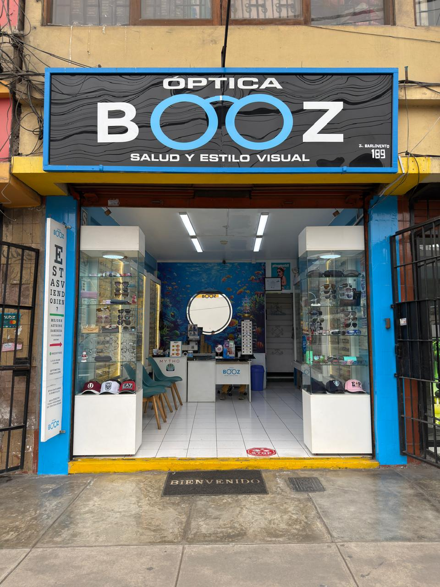
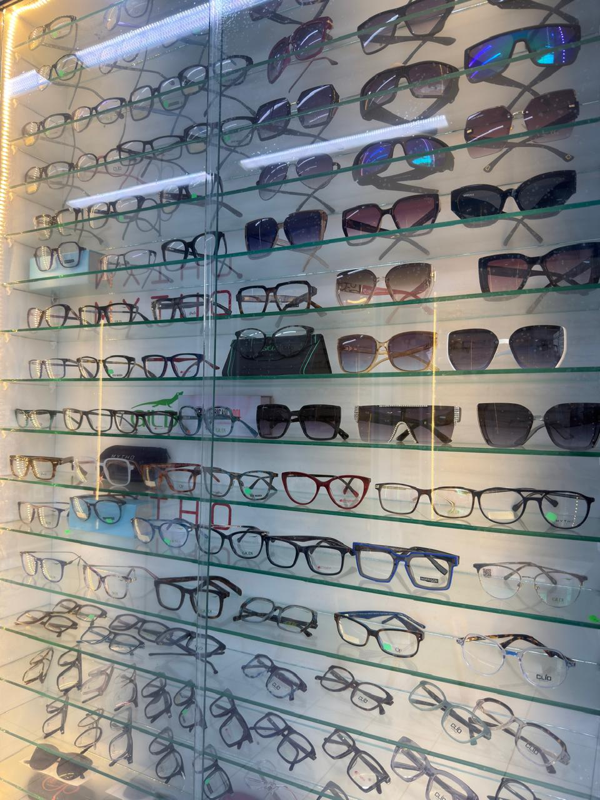

Te sacan los modelos que pidas
«Me permitió probarme los modelos que deseaba», «nos sacó muchos modelos de acuerdo a las preferencias de mi hijita». Con paciencia, incluso con una niña pequeña de por medio.

Salud y estilo visual · Surco
Tres de sus cinco reseñas en Google hablan de lo mismo, y no es el precio: los lentes estuvieron listos al día siguiente.
¿Estás viendo bien?
E
F P
T O Z L D
P E C F D E O
L E F O D P C T E O
Y esto, ¿lo lees? Entonces ya sabes por qué viniste.
La cartilla es suya: está impresa en la puerta de su local. Aquí se resuelve en un scroll — que es más o menos lo que tardan ellos.
Una a elegir y otra a recoger. Todo el rubro compite en la primera. Nadie compite en lo que hay en medio — y es justo lo que sus clientes recuerdan.
«Me permitió probarme los modelos que deseaba», «nos sacó muchos modelos de acuerdo a las preferencias de mi hijita». Con paciencia, incluso con una niña pequeña de por medio.
Donde el rubro dice «vuelva en una semana», a Lucía sus lentes le estuvieron listos al día siguiente. Y a KT le prometieron el martes y lo llamaron el sábado — antes de lo prometido.
«El profesional me explicó detalladamente los cambios en mi vista y el por qué». Además le dijeron que puede volver a recargar el líquido limpiador sin costo.
Sin render ni catálogo de banco: es su mostrador, con sus monturas y sus etiquetas puestas.

Textuales, con nombre, verificables en su ficha de Google. No las escribimos nosotros.
«Mis lentes estuvieron listos al día siguiente, fue demasiado rápido 10/10.»
Lucía Gómez Guimaray · Google · reseña verificable
«Me dijeron que los lentes los tendrían listos para el martes… me llamaron el sábado en la tarde diciéndome que ya llegaron. Mi esposa está feliz.»
KT Nam · Google
«Fui con mi hija pequeña y la señorita que nos atendió tuvo bastante paciencia… La entrega de los lentes fue rápida, de un día para otro.»
Lia C. · Google
«Excelente servicio. Buenos precios y rápidos. Atentos a dudas y transparentes.»
KT Nam · Google
«Cada mirada cuenta una historia, y ustedes hacen posible que se vea con mayor claridad.»
Julia Mercedes Bardales · Google
Calle Barlovento 189, Santiago de Surco — a dos cuadras del Óvalo Higuereta. O escribe antes y pregunta lo que quieras.